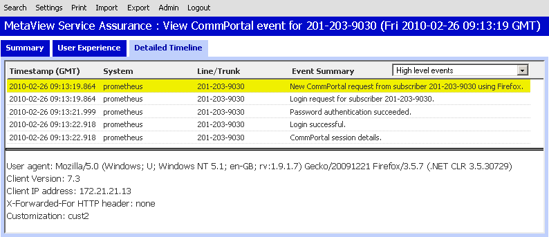
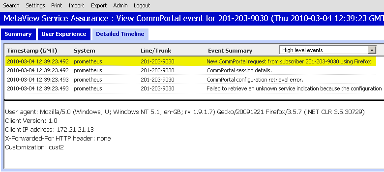
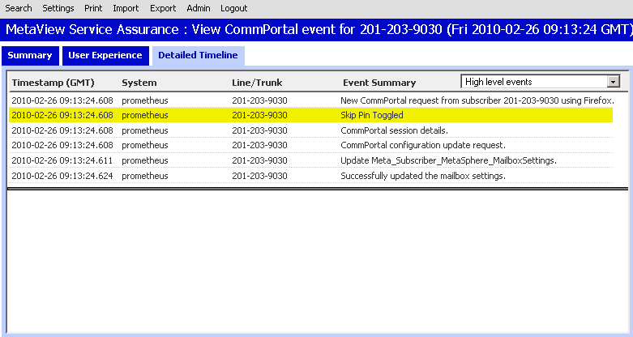
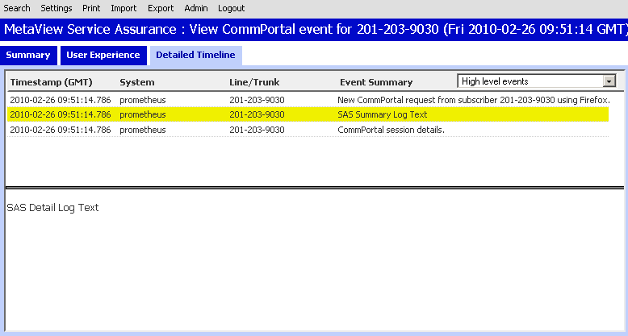

As usual, the tutorial includes extensive example code fragments, which build up to a working example at the end of the tutorial. Feel free to use this code in your own application - you can download the example application as a single file, or you can copy just the relevant code fragments out of this web page.
As usual, you can point the sample code at the CommPortal Sandbox on Innovators to see it working. However, on this particular occasion it's much better to use your own CommPortal server. This is because some of what we'll be doing makes logs appear in the Service Assurance Server; if you're able to use your own system, you can watch that happen in real-time. Don't worry if you can't, though, as we've included screenshots to help you follow along.
And by the way... The first few steps below are slightly different from the previous tutorial. So it's worth reading through from the beginning, even if you're already familiar with a lot of what we cover here.
This creates a global object called CommPortal, which you'll use to get
access to the API.
Remember that the CommPortal popup should open a plain login page, if it loads
something other than that you'll need to include the path to the login page to
the URL of your CommPortal server. Normally the login page is located under
your customization as "domain/cust/login.html".
Like all tutorials, we include a form, which you can use to enter a suitable CommPortal URL. But there's a difference! For this tutorial, we've also included an extra text field you can use to specify a "client version". You can use additional extra snippet of information to note which version of your application the user is running, which in turn can help a great deal in diagnosing any problems.
We'll see below that the client version appears in Service Assurance Server logs. (In a real application, of course, you wouldn't ask the user to specify a value - you'd just hard-code it.)
Timing's important here. The client version must be set after the CommPortal
object has been created, but before login() is called.
As usual, we've coded our doLogin() function so that, when
the user successfully logs in, we automatically proceed to the
next part of the example. In this case, that's the
doEnableButtons() function covered in the next section.
As in some previous tutorials, the functions in this example are fired up as
and when the user clicks buttons on the web page. Those buttons were
originally disabled, to prevent them being used before the subscriber logged
in - so now, we use a doEnableButtons() function to enable them all.
In contrast to some previous examples, you'll notice we don't go on to call any other functions. We're now just going to wait until a button gets clicked.
Instead, we provide buttons to allow a simple piece of EAS Subscriber data to
be read/written to along with buttons to explicitly make SAS logs. We also
provide text boxes to allow you to control what is logged in each of these
cases.
(This HTML fragment shows the buttons as "disabled", but remember that the
code in doEnableButtons() enabled them as soon as the user logged in.)
A lot of the detail of this log is the standard type of thing you'd find in any access log. However, you can see there's already one detail which is a little more interesting: the Client Version of the application.
You might have expected this to be the Client Version we set above, but (unless you just happen to have chosen a matching number) you won't see that coming through at this stage. The reason is that, like all of the tutorials, we've chosen to use CommPortal's own login page to handle authentication. It's that page whose version is being reported just now. Don't worry though - we'll see our own app's Client Version show up in subsequent steps.

During the Core data tutorial, we saw that the CommPortal API has a number of high-level functions - for example, to retrieve messages - and a set of lower-level functions you can use for complete access to CommPortal. The high-level functions take care of all the necessary logging automatically. But when you're using the lower-level core data API, you might like to fill in some extra details yourself.
By specifying log messages to appear in Service Assurance Server, you can explain the flow of logic through your application or clarify why it's making the changes it's making. A good choice of log messages may considerably help your administrators diagnose and fix problems.
Here's a quick example to show how it works. This toggleSkipPin()
function uses the core data API to fetch your current mailbox settings,
then inverts your "Skip Pin" setting.
Actually, we're not going to talk about this function in detail, since we cover very similar examples in the Core data tutorial. If you've not already read that tutorial, this might be a good time.
But we are going to look at what shows up in Service Assurance Server. First of all, whenever you fetch or save data using the CommPortal SDK, the client version is included with the request and is logged to the Service Assurance Server. You don't need to do anything particular to make that happen.
But additionally, when you save data, you can optionally specify an extra piece of log text (up to 128 characters long) which will be logged to the Service Assurance Server. You can use this to provide a better summary of the update, specific to your application.
When you execute toggleSkipPin(), you'll see one of two logs made to the Service Assurance Server.


The SDK functions you use for this couldn't be easier. There's a pair of them - one to make a "normal" log and one to make an "error" log - and they each simply take summary and detail text. Unlike most of the SDK functions, they're synchronous, so there's no callback function to worry about.
In this example, we call the CommPortal SDK functions and include the text
you've entered into the text boxes in the web form. There are a couple
of limits to be aware of: summary text can be up to 128 characters, and detail
text up to 512 characters. You need to bear this in mind to keep your logs
usable, but in our example we can happily ignore it, since the SDK will
automatically truncate over-long logs and append "..." append in place of the
missing part.
You might well be asking: what's the difference with an "error" log? It's simple: makeSASErrorLog() will add a stack trace to the detail text, and will also mark the log within the Service Assurance Server as an error. Try it yourself, or compare the two screenshots below.
